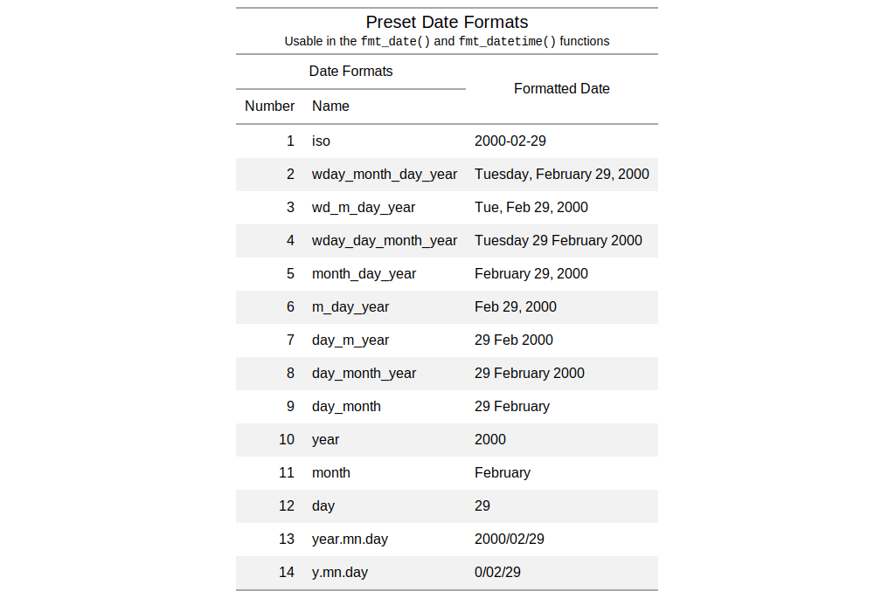

| info_date_style {gt} | R Documentation |
The fmt_date() function lets us format date-based values in a
convenient manner using preset styles. The table generated by the
info_date_style() function provides a quick reference to all 14
styles, with associated number codes, the format names, and example outputs
using a fixed date (2000-02-29).
info_date_style()

Other information functions: info_currencies,
info_paletteer,
info_time_style
# Get a table of info on the different # date-formatting styles (which are used # by supplying a number code to the # `fmt_date()` function) tab_1 <- info_date_style()